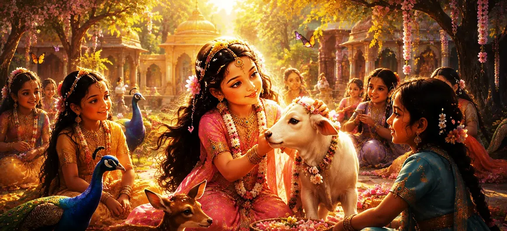

As Sati grew within the household of Dakṣa Prajāpati, her extraordinary nature became increasingly evident. Though she appeared as a young girl, she was in truth the incarnation of the Divine Mother. Her childhood was filled with grace, purity, and wondrous activities that brought joy to everyone around her. Through her playful actions and gentle conduct, she revealed glimpses of the divine power hidden within her earthly form.
The childhood pastimes of Sati were not ordinary games. Every action reflected her divine origin and foreshadowed her future role as the eternal consort of Lord Shiva. Even while enjoying the simple joys of childhood, she naturally displayed wisdom, compassion, and devotion that surpassed her age. Those who observed her were often filled with wonder, sensing that she was destined for a higher purpose.
Sati’s gentle nature and radiant presence won the hearts of everyone around her. Family members, attendants, and visitors were naturally drawn to her kindness and purity. Wherever she went, she brought happiness and harmony, and her cheerful disposition filled Dakṣa’s household with joy.
Like other children, Sati enjoyed playful activities, yet even her games carried a unique spiritual charm. Her movements were graceful, her words were gentle, and her actions inspired affection and admiration. Those who watched her often felt as though divine beauty itself had taken human form.
Even during her childhood, Sati displayed a remarkable attraction toward sacred subjects. She listened attentively to stories about the gods and delighted in hearing of spiritual truths. Unlike ordinary children, her mind frequently turned toward contemplation and devotion, revealing the divine nature hidden within her.
As Sati grew older, subtle signs began to reveal the greatness of her future destiny. Her virtues, wisdom, and devotion steadily increased, and many wise observers sensed that she was destined for a sacred role far beyond ordinary life. The cosmic purpose behind her birth was gradually beginning to unfold.
Her thoughts, words, and actions reflected divine purity.
She treated all beings with kindness and affection.
From an early age, her heart was naturally drawn toward the Divine.
Dakṣa and his family regarded Sati as a source of endless joy. Her presence brightened every gathering, and her virtues brought honor to the household. Though they loved her as a daughter, they could not fully comprehend the divine mystery that surrounded her life and destiny.
The gods observed Sati’s growth with admiration and anticipation. They knew that she was no ordinary child but the Divine Mother herself. As they watched her childhood unfold, they eagerly awaited the day when her sacred destiny would lead her toward Lord Shiva.
Sati’s childhood revealed the first signs of her divine mission, but greater events still lay ahead. As she matured, her devotion would deepen and her connection with Lord Shiva would gradually emerge. The next chapter continues this sacred journey, revealing how her spiritual destiny begins to take a clearer form.
Sati’s childhood teaches that true greatness reveals itself through purity, humility, and devotion. Though she possessed divine power, she expressed it through kindness, wisdom, and love. The highest spiritual qualities often appear in the simplest actions and the most innocent moments of life.
Although Sati spent her early years in the comfort of her father’s home, her life was destined for a much greater purpose. Every virtue she displayed and every sacred inclination she expressed was preparing her for the role she would one day fulfill beside Lord Shiva.
The childhood of Sati was only the beginning of a divine story that would inspire countless devotees through the ages. Her devotion, sacrifice, and unwavering love would eventually become a shining example of spiritual dedication and divine union.
"From childhood itself, the heart of Sati moved toward the Divine. Pure devotion does not arise suddenly—it blossoms naturally in a soul destined to unite with the Supreme."
The birth of Sati fulfilled a divine promise, and her childhood revealed the first signs of her extraordinary destiny. As she grows, her heart becomes increasingly drawn toward the Supreme Lord Shiva. The next chapter explores the awakening of Sati’s devotion and the deep spiritual love that would eventually lead her toward her eternal divine union.